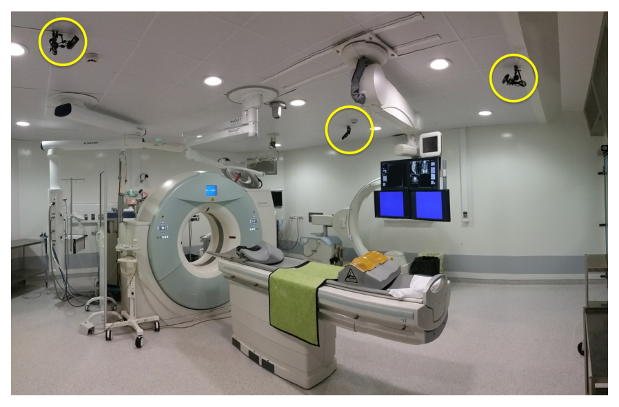
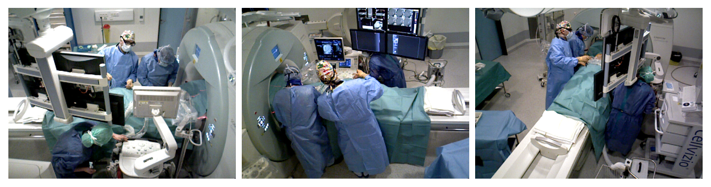
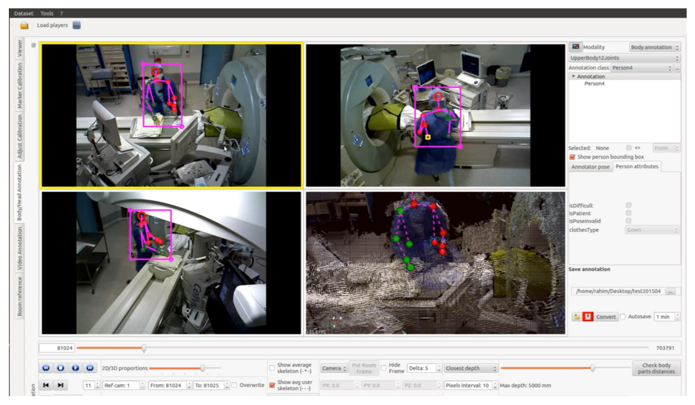
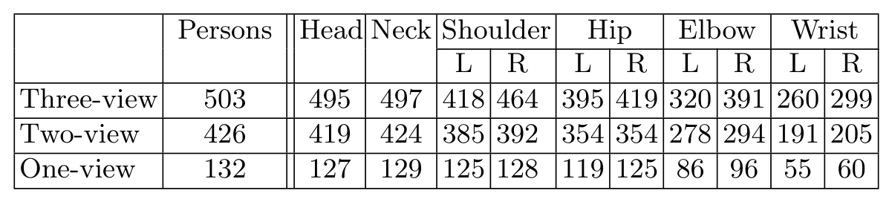
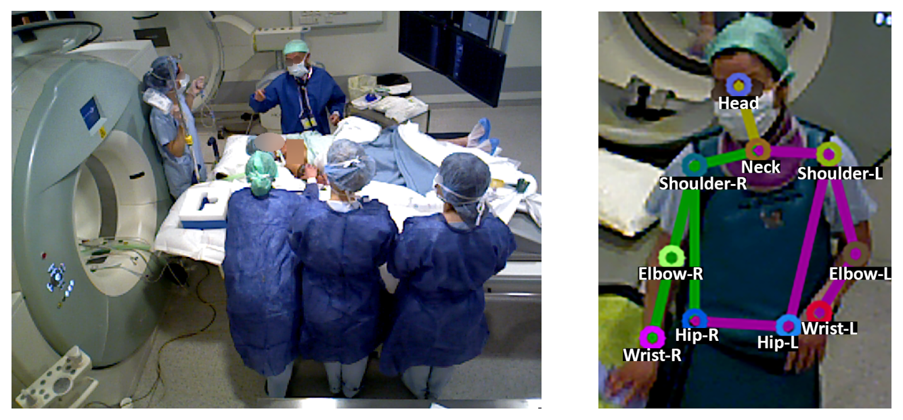
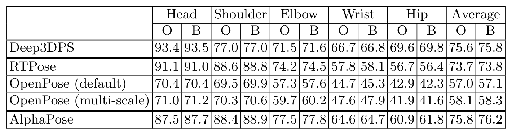
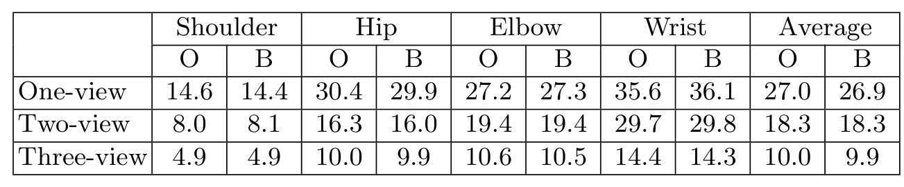
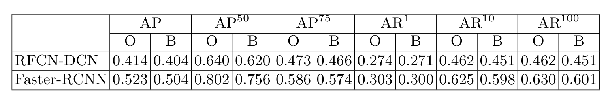

图文解读
1背景与动机
手术室是姿态估计最难的场景之一：设备多，医护人员穿宽松手术衣，几个人挤在手术床边互相遮挡。作者先前的工作已经发现，最先进的方法在手术室数据上性能明显下降。
问题在于没有合适的公开数据来衡量这种下降。 COCO、MPII 只有二维；Human3.6M、HumanEva、IXMAS 有三维，但都是单人受控场景；MultiHumanOR 是手术室多视角数据，却由演员模拟。
MVOR 要补的就是这块：真实临床介入中录制、带多人三维姿态的多视角数据。
2核心观点速览
- 数据：一间介入手术室，三台吊装相机，四天录制，732 个同步多视角帧，附标定参数和以手术床为参照的全局坐标系。
- 标注：4699 个人体框，2926 个二维和 1061 个三维上半身姿态，每个姿态 10 个关键点。
- 基线：现成方法都没在 MVOR 上训练。二维最好平均
PCK约 76，三维单视图误差 27.0 cm，检测最好AP0.523。 - 匿名化：原图和模糊图结果几乎一样。
- 边界：没有训练/测试划分，标注一致性论文未说明。
所以 MVOR 实际上是一份跨域测试集。 下面先看数据怎么采。
3数据怎么采
三台 Asus Xtion Pro 相机用关节臂吊在天花板上，对着手术床周围，以 20 FPS、640x480 同步录制彩色和深度。手术包括椎体成形术和肺活检。

每台相机的内参用标定板求得，相机之间和到全局坐标系的变换按两步法求得。732 帧是从四天录像中采样出来的，采样间隔论文未说明，相邻帧可能很像，有效样本量也许小于帧数。

采集讲完，接下来是标签。
4标签怎么做
所有人都标框；只有在至少一个视角中上半身可见超过 50% 的工作人员才标姿态。患者只有框没有姿态，所以二维姿态 2926 个，比框少约四成。
三维标注分两步：先在每个视角画二维骨架，用深度反投影到三维并对可见关节取平均；再由标注员检查投影，必要时直接在三维中修正。修正之所以必要，是因为深度有误差，各视角的二维标注也因角度和遮挡不一致。

标注员人数、修正比例和一致性论文未说明，标签噪声有多大无从判断。

三维姿态里在三视角、两视角、单视角可见的分别是 503、426、132 人。腕部最难看到。
5匿名化怎么做
患者面部和裸露部位完全模糊；医护人员戴口罩时只模糊眼部，否则整张脸模糊。作者想尽量少模糊，以免影响算法。

10 个关键点里只有头部靠近模糊区域，所以对姿态的影响理应很小。结果也确认了这一点。
6结果说了什么
二维。 AlphaPose 平均 PCK 75.8，Deep3DPS 75.6，旧版 RTPose 73.7，新版 OpenPose 默认只有 57.0。所有方法都是腕部和髋部最差，而这正是手术室里最常被挡住的部位。

三维。 MV3DReg 平均误差单视图 27.0 cm、两视图 18.3 cm、三视图 10.0 cm。腕部三视图下仍有 14.4 cm，对判断手是否接触器械来说仍然太大。

检测。 Faster-RCNN 的 AP 0.523、AP50 0.802，最好。由骨架推出的框中 AlphaPose 最好，AP50 0.540，仍低于专门的检测器。

这些数字能支持什么结论，要看它们和哪些因素混在一起。
7为什么会这样（深入分析）
低分测的是迁移，不是上限。 所有方法都没在 MVOR 上训练，Deep3DPS 只在同一手术室的另一份数据上微调过。“仍有很大提升空间”这句话，论文无法区分是任务本身难，还是模型没适配；要区分它需要在 MVOR 划分上训练的结果，论文没有。
视图数和样本难度混在一起。 表 3 三行是不同的人。只在一个视角可见的人本来就被挡得更重，所以 27.0 到 10.0 cm 的下降不能全算在视图数上。能分开二者的实验是：对三视图可见的同一批人只给一个视角再测，论文没做。
自顶向下在拥挤场景里占优。 AlphaPose 先检测人再估计姿态，只用彩色图就追平了用深度且见过同一手术室的 Deep3DPS。我的判断：这说明先找人能减少关节错配，但两者条件不对等，不能据此排序。
8结果没说什么
- 模糊无影响只对“在模糊图上测试”成立；在模糊图上训练会不会学到捷径，论文没检验。检测器受模糊影响稍大，
Faster-RCNN的AP50从 0.802 降到 0.756。 - 新版
OpenPose为何比旧版RTPose低 16 个点以上，论文未说明。 - “首个真实临床数据集”只是相对作者列举的数据集，没有系统检索。
- 下半身和患者姿态没有标注，相关应用无法用 MVOR 验证。
9复现要注意什么
- 没有官方划分。若要在 MVOR 上训练，按天或按手术划分，避免相邻帧泄漏。
- 三维误差按支撑视图数分层报告，并写明二维输入来自哪个检测器，因为
MV3DReg的误差包含OpenPose的误差。 - 写明方法是否在 MVOR 或同一手术室数据上训练过，否则和论文基线不可比。
- 由骨架推框时只比
AP50，框偏小会让高交并比下的精度失真。